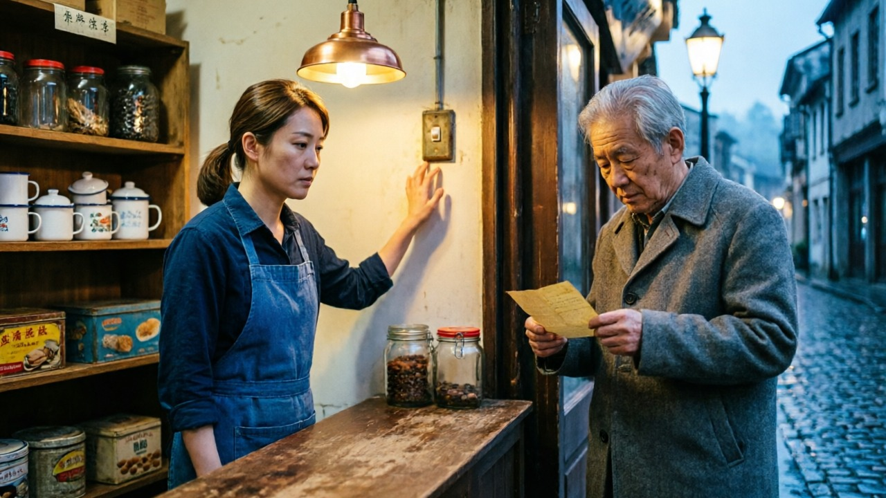

一句话故事
深夜小店要打烊了，门外有人借着店里的灯读信——她可以选择把灯留着，也可以关灯走出去。
主角与场景参考

关键画面：暖黄店内 / 冷蓝街外；女店主（短马尾、蓝围裙）、老人（灰呢外套、信纸）
交互结构
| 节点 | 内容 |
|---|
| 开场 | 12 秒。店主的手停在开关上，老人在门外读信 |
| 选择 | 「把灯留着」/「关灯，出去看看」 |
| 分支 A | 收回手、调亮灯、端热水出去，退回门内看他 |
| 分支 B | 关灯、拿伞出门、撑伞遮住他、两人回门口重开灯 |
| 总时长 | 单次体验 ≈ 24 秒，全部内容 36 秒 |
分镜
| 时长 | 镜号 | 画面 | 声音 |
|---|
| 12s | S1 开场 |
街对面缓慢推近到店门口。店内暖光，女店主手停开关上迟迟未按；门外老人借光读信，屋檐滴水，湿地反光。 |
夜虫、远处车声、水滴；无对白 |
| 12s | S2-A 留灯 |
她收回手，把灯调亮；转身倒一杯热水，推门放在老人身边的木凳上，退回门内靠着门框看他。 |
水声、杯底碰木凳、门轴轻响 |
| 12s | S2-B 出去 |
她按下开关，店内暗下；抓伞推门，撑伞站到老人身边，抬手指了指店门；两人一起走回，灯重新亮起。 |
开关咔哒、雨声变大、伞面展开、脚步 |
素材清单
open.mp4开场 · 12s · 1280×720 · H.264
a.mp4分支 A · 12s · 1280×720 · H.264
b.mp4分支 B · 12s · 1280×720 · H.264
说明 三个片段由「智影 / 通义万相 wan3.0-video」文生视频生成，统一 16:9、720P、原生音轨；
开场与两条分支共用同一段人物与场景描述，保证气质与造型一致。互动网页为纯前端实现（HTML + CSS + JS），
含返回重选、跳过片头、倍速播放。